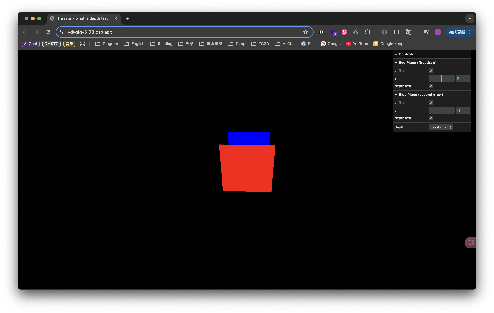

此為 Three.js 中物體的遠近關係 系列文章 - 第 1 篇：
- Three.js 中物體的遠近關係 (1) - 什麼是深度測試？
- Three.js 中物體的遠近關係 (2) - 左手/右手座標系與齊次座標
- Three.js 中物體的遠近關係 (3) - 深度值的計算方式
- Three.js 中物體的遠近關係 (4) - 對數深度值
- Three.js 中物體的遠近關係 (5) - 渲染物體的順序
- Three.js 中物體的遠近關係 (6) - 如何正確的渲染透明粒子？
前言
我想許多人一開始接觸 Three.js 中關於 深度測試(Depth testing) 的時候，常會聽到 depthTest, depthWrite，雖然看過很多文章講解這兩者的差別以及應用場景，但說真的還是無法體會兩者差在哪，於是萌生了研究深度測試的想法。而隨著對於深度測試的了解後才發現深挖的東西越來越多，所以才有了這一系列相關的文章
什麼是深度測試
當人的眼睛四處看的時候，會看到許多不同的物體，這些物體有些近、有些遠，遠的物體會被近的擋住，而當 Three.js 要渲染 3D 物件在場景上時也是一樣的道理，將物體呈現在畫面上時，需要了解每個物體相對於相機(也就是眼睛)之間的遠近關係，而如何判斷物體遠近關係，決定誰要呈現在前面最終將物體渲染到 2D 螢幕上的這種技術就是所謂的深度測試
深度測試是如何運作的
深度測試會將每個 像素(fragment) 的深度值存儲在 深度緩衝區 (Depth Buffer or z-buffer) 中，每個 像素(fragment) 深度值的範圍都會在 [0, 1] 之間，0 代表這個 像素(fragment) 離相機最近，而 1 代表離相機最遠，以 PerspectiveCamera 來說，0 與 1 分別代表的位置就是相機的 近平面(near plane) 與 遠平面(far plane)

在深度測試的過程中，會比較相機視線方向上所有物體的深度值，深度值較大的物體其 像素(fragment) 會被丟棄而不會繪製到畫面上。例如：A 物體與 B 物體都在相機的視線方向上，A 較近、B 較遠，當 A 物體先被繪製時，場景上都還沒有東西，這些空白場景 像素(fragment) 預設的深度值是 1.0，而 A 物體因為在近平面與遠平面之間，代表深度值會落在 [0, 1] 間，比預設的深度值 1.0 小，因此深度測試判斷 A 物體通過深度測試將其繪製到畫面上，接著繪製 B 時因為他比 A 還要遠，代表 B 的深度值大於 A 的深度值，此時深度測試判斷失敗把 B 的 像素(fragment) 丟棄，最終 B 就不會被繪製到畫面上
深度測試的啟用
在 Three.js 中深度測試的啟用定義在 Material.depthTest，預設值是 true，也就是說在繪製 Material 時，會先將 Material 中的每個 像素(fragment) 與原有 深度緩衝區 中的深度值進行比較，如果新的 像素(fragment) 比較近(也就是深度值較小) 就會繪製在畫面上，相反來說如果比較遠的話就將這個 像素(fragment) 丟棄，不會繪製到畫面上。而如果深度測試關閉的話，代表在繪製 Material 時不需要判斷其 像素(fragment) 與原有 深度緩衝區 中深度值的關係，也就是說這個 Material 中的 像素(fragment) 不管他所處的位置是遠是近，最終都會被繪製到畫面上
深度測試函式
指的是當比較兩個 像素(fragment) 比較深度值時使用的方式，前面有提到近的物體深度值較小、遠的物體深度值較大，而在進行深度測試時，深度值較小的物體會通過深度測試，為什麼深度值較小的代表通過深度測試呢？原因是定義在 Material.depthFunc 的深度測試函式，其預設值是 LessEqualDepth，代表當前 像素(fragment) 的深度值小於或等於 深度緩衝區 原有的深度值時通過測試，也就是渲染在畫面上。除了預設的 LessEqualDepth 外，還有以下幾種不同的比較方法：
| 運算符名稱 | 描述 |
|---|---|
| LessEqualDepth | 當前深度值小於或等於緩衝區原有的深度值時通過測試。 |
| LessDepth | 當前深度值小於緩衝區原有的深度值時通過測試。 |
| GreaterEqualDepth | 當前深度值大於或等於緩衝區原有的深度值時通過測試。 |
| GreaterDepth | 當前深度值大於緩衝區原有的深度值時通過測試。 |
| EqualDepth | 當前深度值等於緩衝區原有的深度值時通過測試。 |
| NotEqualDepth | 當前深度值不等於緩衝區原有的深度值時通過測試。 |
| AlwaysDepth | 始終通過深度測試，不論深度值如何。 |
| NeverDepth | 始終不通過深度測試，所有片段都會被丟棄。 |
是否寫入深度緩衝區
前面提到運行深度測試的時候會比較兩個 像素(fragment) 的深度值，比較後會將深度值較大的 像素(fragment) 丟棄，並把深度值較小的 像素(fragment) 寫入 深度緩衝區，特別的是要不要將深度值寫入 深度緩衝區 是可以自行設定的。在 Three.js 中是否寫入 深度緩衝區 的開關定義在 Material.depthWrite，預設值是 true，代表在繪製 Material 時，如果深度測試通過會把新 像素(fragment) 的深度值寫入 深度緩衝區。以兩個物體 A 與 B 來舉例，一開始 A 物體中的 像素(fragment) 寫入了深度值為 0.5，接著繪製 B 物體的 像素(fragment) 其深度值是 0.3，發現 B 物體中其 像素(fragment) 的深度值比較小通過深度測試，就會將 0.3 寫入深度緩衝區 中，在下次深度值比較的時候就會將新 像素(fragment) 的深度值拿來跟 0.3 進行比較了
了解深度測試的行為
下面藉由幾個例子更好的了解深度測試是如何運作的，請搭配 線上 Demo 版 自行操作
在這個例子中我創建了兩個平面，一個是紅色的平面(z=0)，另一個是藍色的平面(z=-1)，而相機視野的方向設定是朝向 -z 軸的，所以一開始可以看到紅色的平面在前而藍色的平面在後，下面這張圖是我稍微把相機拉高，所以可以看到後面的藍色平面
另外值得一提的是，在這個例子中我先繪製的是紅色的平面，接著才是藍色的平面，繪製順序對於後面分析物體遠近關係是很重要的
1 | // first draw |
Case 1. 切換深度測試的開關
- 紅色平面的
depthTest設為false=> 藍色平面被繪製上去
繪製紅色平面時因為沒有開啟深度測試，因此紅色平面 像素(fragment) 的深度值也不會寫入 深度緩衝區 中，後面當繪製藍色平面時，藍色平面 像素(fragment) 比較的深度值都是 深度緩衝區 中預設的 1.0，藍色平面 像素(fragment) 都比 1.0 小通過深度測試，所以最終藍色平面覆蓋紅色平面繪製到畫面上
- 藍色平面的
depthTest設為false=> 藍色平面被繪製上去
繪製藍色平面時因為沒有開啟深度測試，也就不會將藍色平面中的 像素(fragment) 去與原先 深度緩衝區 的值進行比較，最終藍色平面會直接繪製在畫面上。這邊可以看到一個特性，就是當depthTest關閉時，完全不需要管原有 深度緩衝區 中的深度值是多少，只要後畫的物體都一定會在畫面上呈現
Case 2. 改變深度測試函式
- 紅色平面的
depthFunc改為GreaterEqualDepth=> 紅色平面沒有被畫上去
當繪製紅色平面時，由於紅色平面的位置在 遠平面(far plane) 之內，代表其 像素(fragment) 的深度值都小於 1，而改成GreaterEqualDepth後，代表深度值需要大於原有 深度緩衝區 的深度值，深度測試才會成功，但預設 深度緩衝區 中的深度值為 1.0，因此紅色平面的深度測試失敗，最終不會繪製出來
- 藍色平面的
depthFunc改為GreaterEqualDepth=> 藍色平面被畫上去
跟上面的原因一樣，原本藍色平面的位置就在紅色平面之後，藍色平面的深度值都比紅色平面大，當depthFunc改為GreaterEqualDepth後，藍色平面的深度測試就都通過了，因此藍色平面被繪製出來
Case 3. 改變是否寫入深度緩衝區
- 紅色平面的
depthWrite改為false=> 藍色平面被畫上去
因為紅色平面 像素(fragment) 其深度值並沒有被寫入 深度緩衝區，所以當繪製藍色平面時，藍色平面的 像素(fragment) 都是與 深度緩衝區 中預設的 1.0 比較，也就通過深度測試被繪製出來了